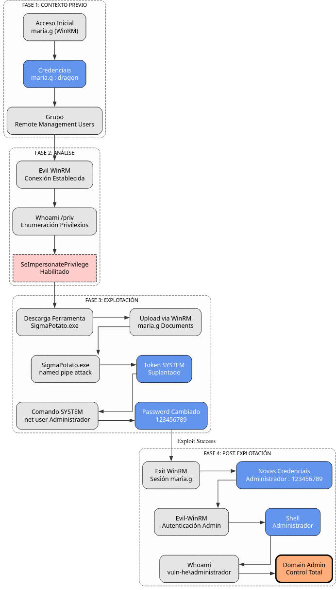

Vector de Ataque: SeImpersonatePrivilege (Potato Attack)
Fase: 4. Post-Explotación
Usuario Obxectivo: maria.g.
Obxectivo Final: NT AUTHORITY\SYSTEM (Para cambiar contrasinal de Admin).
Descrición:
O privilexio SeImpersonatePrivilege permite a un usuario crear un proceso co token de acceso doutro usuario que se conecte a un "Named Pipe" propiedade do atacante.
Neste laboratorio, usaremos a ferramenta SigmaPotato. A diferenza doutros exploits que buscan abrir unha shell interactiva (o cal pode fallar ou colgarse en certas sesións remotas), SigmaPotato permite executar un comando específico con privilexios de SYSTEM de forma directa e limpa.
Diagrama de ataque

Procedemento Paso a Paso
1. Acceso Inicial e Verificación
Conectamos como maria.g mediante WinRM, xa que este usuario pertence ao grupo Remote Management Users.
Unha vez dentro, verificamos que o privilexio está presente e habilitado.
*Evil-WinRM* PS C:\Users\maria.g\Documents> whoami /priv
INFORMACIÓN DE PRIVILEGIOS
--------------------------
Nombre de privilegio Descripción Estado
============================= ============================================ ==========
SeImpersonatePrivilege Suplantar a un cliente tras la autenticación Habilitada
...
2. Selección e Descarga da Ferramenta
Usaremos SigmaPotato, unha implementación moderna dos ataques Potato deseñada para ser simple e efectiva.
Na máquina atacante (Kali):
Subida á máquina vítima (WinRM):
3. Execución do Ataque (Cambio de Contrasinal)
En lugar de tentar obter unha shell reversa ou interactiva (que a miúdo é inestable), aproveitaremos o privilexio de SYSTEM para cambiar directamente o contrasinal do Administrador do Dominio. Isto garante o acceso total inmediato.
Saída esperada: O exploit indicará que o proceso se lanzou como SYSTEM e o comando completouse correctamente.
4. Verificación: Acceso como Administrador
Agora que cambiamos o contrasinal, desconectamos a sesión de maria.g e entramos como Administrador.
# Saír da sesión actual
*Evil-WinRM* PS C:\Users\maria.g\Documents> exit
# Conectar como Administrador coa nova clave
evil-winrm -i 192.168.56.100 -u Administrador -p '123456789'
Se o login é exitoso, comprometimos totalmente o dominio.